Особенности модификаций Lada KalinaМодификации автомобиля LADA KALINA
Автомобили LADA KALINA выпускаются с тремя типами кузова: седан, хэтчбек и универсал — и двумя типами двигателя (см. табл). На часть автомобилей установлен восьмиклапанный двигатель рабочим объемом 1,6 л. С начала выпуска автомобили комплектовались двигателем модели 21114, применявшимся на автомобилях ВАЗ «десятого» семейства. Начиная с 2007 года, его заменили двигателем 11183, который также устанавливают на автомобили семейства SAMARA. Оба двигателя аналогичны по устройству и близки по техническим характеристикам (см. , «Общие сведения об автомобиле»). Внешне эти двигатели отличаются цветом блока цилиндров: блок у двигателя 21114 — синий, а у двигателя 11183 — серый. Об особенностях устройства и ремонта этих двигателей рассказано ниже в соответствующих разделах. Головка блока цилиндров восьмиклапанного двигателя компактнее (по сравнению с шестнадцатиклапапным), поэтому все навесные агрегаты двигателя доступны сверху. Регулировку ремня привода генератора можно выполнять без снятия бачка стеклоомывателей. Замену регулятора напряжения и снятие генератора можно выполнить сверху. Легко доступен датчик детонации и другие элементы системы управления двигателем. Датчик положения распределительного нала установлен н заглушке головки блока цилиндров. Он реагирует на штифт, запрессованный в распределительный вал. В системе зажигания восьми клапанных двигателей применяется катушка зажигания 2111 -3705010-02 (54.3705). Она представляет собой две двухвыводные катушки зажигания, выполненные в едином корпусе. Искрообразование происходит в двух цилиндрах одновременно (1 - 4 или 2-3). Катушка зажигания соединена со свечами зажигания четырьмя высоковольтными проводами с несъемными наконечниками 2111-3707080-12. 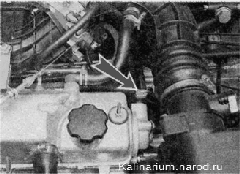
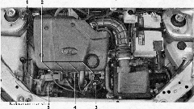
Моторный отсек автомобиля с двигателем 1,6i: 1 — натяжной механизм ремня привода генератора; 2 — свечи зажигания с надетыми на них наконечниками высоковольтных проводов; 3 — катушка зажигания; 4 — датчик детонации; 5 — генератор чик положения распределительного вала установлен в заглушке головки блока цилиндров. Он реагирует на штифт, запрессованный в распределительный вал. 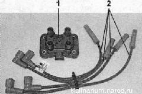Элементы системы зажигания восьмиклапанного двигателя l,6i: На двигателях применяются свечи зажигания А17ДВРМ, где: А - резьба М 14x1,25; 17 — калильное число; Д — длина резьбовой части 19 мм, с плоской посадочной поверхностью ; В — выступание теплового конуса изолятора за торец резьбовой части корпуса; Р — встроенный резистор; М — биметаллический центральный электрод. На двигатель можно установить свечи аналогичного типа других производителей: - WR7DCX (BOSCH); - LR15YC (BRISK "SUPER"). 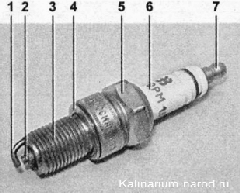Свеча зажигания двигателя l,6i: 1 — боковой электрод; 2 — центральный электрод (в тепловом конусе изолятора); 3 — резьбовая часть корпуса; 4 — уплотнительное кольцо; 5 — шестигранная часть корпуса под ключ; 6 — изолятор (на нем нанесена маркировка свечи зажигания); 7 — контактный наконечник (съемный, установлен на резьбе) Особенности ремонта системы зажигания показаны ниже. На восьмиклапанных двигателях применяется топливная рампа 11181144010, которая отличается от рампы двигателя 11194 формой и конструкцией крепления форсунок. Снять топливную рампу с двигателя можно без демонтажа впускного трубопровода и ресивера. 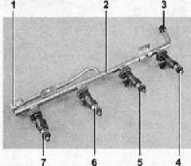Топливная рампа двигателя l,6i: 1 — диагностический штуцер; 2 — топливная рампа; 3 — штуцер для соединения с топливопроводом; 4, 5, 6 и 7 — форсунки 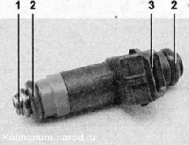Форсунка двигателя 1,6i: 1 — распылитель; 2 — уплотнительное резиновое кольцо; 3 — выводы для подсоединения колодки жгута проводов На топливную рампу установлены форсунки 1118-1132010 (SIEMENS VAZ 20734). Кузова автомобилей ВАЗ-1117, -1118 и-1119 отличаются конструкцией задней части. Другие детали кузова идентичны для всех моделей. Дверь багажного отделения универсала отличается от двери хэтчбека только формой. При этом задние фонари расположены не на задних стойках, а встроены в задние крылья над бампером, аналогично тому, как это выполнено на автомобиле с кузовом седан. Задние фонари седана и универсала похожи по форме, но невзаимозаменяемые. 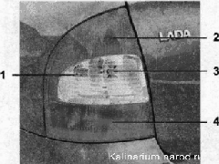Задний фонарь автомобиля с кузовом седан: 1 — секция заднего указателя поворота; 2 — секция сигнала торможения; 3 — секция фонаря заднего хода; 4 — секция габаритного и противотуманного света Для замены ламп в заднем фонаре (как и на хэтчбеке) необходимо снять фонарь. Задний фонарь крепится тремя гайками под ключ на 8 мм. Для доступа к ним и к колодке жгута проводов в обивке багажного отделения выполнены отверстия. 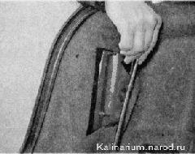Крышка багажного отделения седана удерживается в открытом положении двумя газовыми упорами. Для замены упора необходимо, поддев шлицевой отверткой, снять ее концы с шаровых пальцев петли крышки. 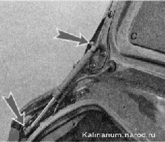Крышка багажного отделения прикреплена к каждой петле тремя гайками под ключ на 10 мм. 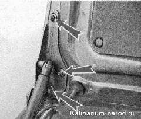Замок закреплен на крышке тремя гайками под ключ на 10 мм. 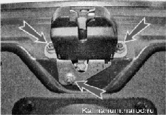Для доступа к выключателю (личинке) замка в обивке крышки багажного отделения выполнено отверстие, закрытое пластмассовой крышкой. Крышка удерживается четырьмя держателями. |